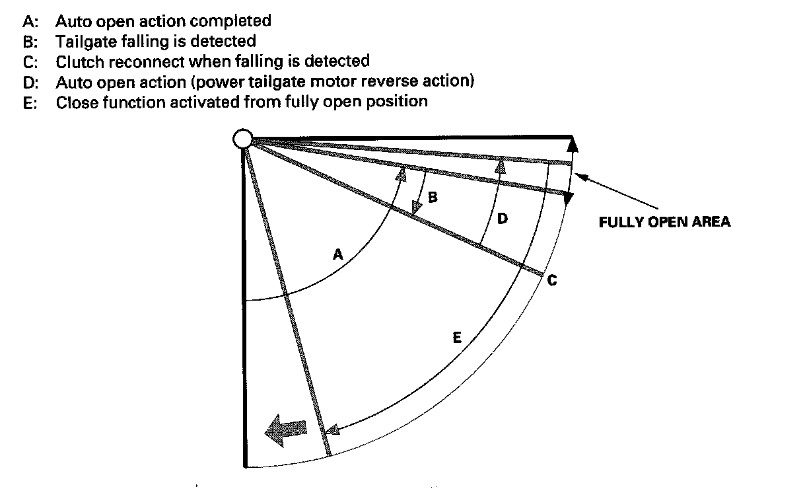
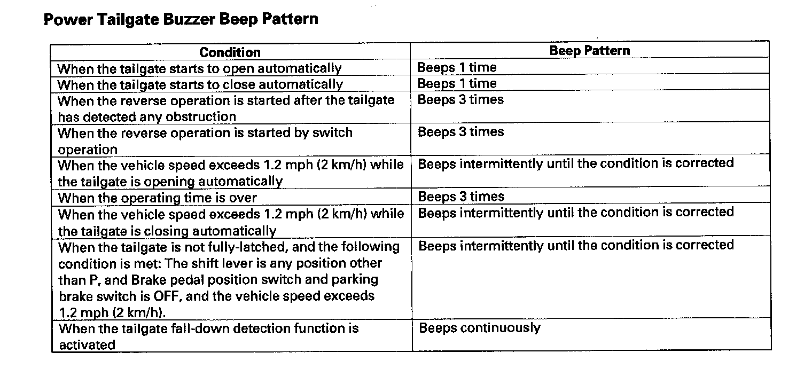

Trunk / Liftgate: Description and Operation
Power TailgateSystem Description
The power tailgate can be opened and closed automatically by operating the dashboard switch, outside handle switch (for open), inside switch (for close) or the keyless transmitter. The power tailgate has two safety functions for safeguarding passengers: obstruction detection , and fall-down detection.
Basic Operation
OPEN: The power tailgate can be opened by operating the driver's switch, outside handle, or the keyless transmitter under the following conditions:
- Tailgate is fully closed (full-latched position is detected.).
- Driver's door or Passenger's door lock knob switch is in UNLOCKED.
- The remote unlock button is pressed twice, and then the tailgate button is pressed and held for 2 seconds (unless customized setting are set to unlock all doors).
- Shift lever is in Park position.
- Vehicle speed is less than 1.2 mph (2 km/h).
- Closer unit detects the neutral position.
- Battery voltage (VBU) is more than 11 V.
- System is not in fail-safe mode.
CLOSE: The power tailgate can be closed by operating the driver's door tailgate switch, inside tailgate switch, or the keyless transmitter under the following conditions:
- Tailgate is fully open.
- Pinch sensor detects no obstruction.
- Closer unit detects the neutral position.
- Battery voltage (VBU) is more than 11 V.
- System is not in fail-safe mode.
Obstruction Detection Function
If any obstruction is detected while the tailgate is automatically opening or closing, the tailgate will stop and the reverse operation is activated. An obstruction is detected by the tailgate pinch sensor and the pulser in the drive unit. If the obstruction is detected when the shift lever is in any other position than P, or the vehicle speed exceeds 1.2 mph (2 km/h), the tailgate stops moving immediately.

Fall-down Detection Function
This function prevents the tailgate from suddenly falling down because of an accumulation of snow, or other causes. If the pulser in the drive unit detects abnormal pulses, the tailgate starts to open. If this operation is activated twice, the tailgate will close automatically. If the obstruction detection function detects any obstruction several times during this fall-down detection function, the tailgate stops moving.
NOTE: If the tailgate falls repeatedly, replace the tailgate support strut.
Power Tailgate Buzzer Beep Pattern:

Power Tailgate Buzzer Beep Pattern